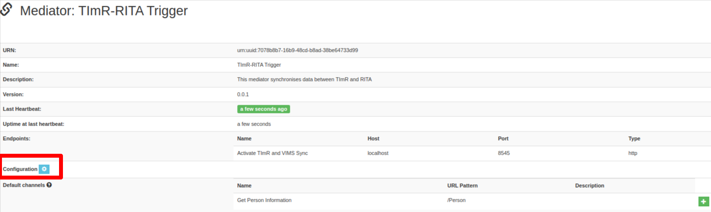
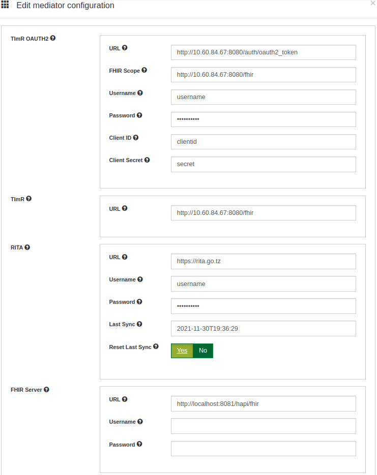

Configuring The Mediator¶
- Configuration to connect the mediator with openHIM
inside the mediator, use your preffered text editor and open config.json under config folder
vim config/config.json
Below is the content of config.json
{ "api": { "username": "root@openhim.org", "password": "openhim-password", "apiURL": "https://localhost:8080", "trustSelfSigned": true }, "register": true }
Change username and password to a real account that can connect to openHIM
If the mediator and openHIM are on different servers, then you will need to change the apiURL
Note
You need to start the mediator with below commands before you can proceed with the rest of the configurations
cd openhim-mediator-timr-rita
node index.js
- Configuration parameters of the mediator with TImR and RITA
Login to openHIM and click the mediators link Click to open the TImR-RITA Trigger mediator
Click the gear icon next to configuration to open the configuration page that looks as below
TImR OAUTH2 section defines credentials needed to request access token from TImR that will be used to query data in TImR
TImR section defines credentials for querying data to TImR
RITA section defines credentials required to push data inside RITA.
URL: is the RITA base URL
username: is the user that has permission to push data to RITA
password: is the password of the user that has permission to push data to RITA
Last Sync: is the last time data was pushed to RITA, the mediator uses this time to pull updated data from TImR since this time
Reset Last Sync: Use this if you want to reset the mediator and pull all children data from TImR and push them to RITA
FHIR Server defines credentials to connect to the FHIR server that has facilities and administrative areas mapping data between RITA and TImR
{kind=link}